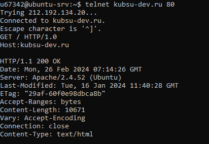
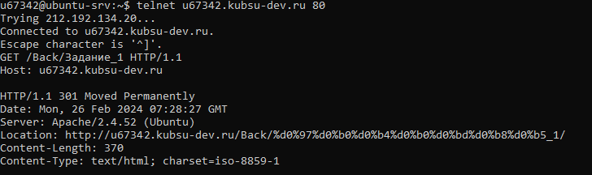
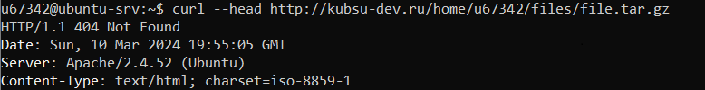
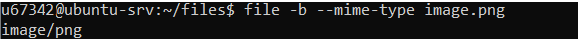
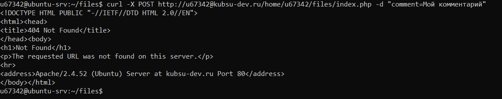

1) Получить главную страницу методом GET в протоколе HTTP 1.0

2) Получить внутреннюю страницу методом GET в протоколе HTTP 1.1

3) Определить размер файла file.tar.gz, не скачивая его

4) Определить медиатип ресурса /image.png

5) Отправить комментарий на сервер по адресу /index.php;

6) Получить первые 100 байт файла /file.tar.gz
7) Определить кодировку ресурса /index.php.